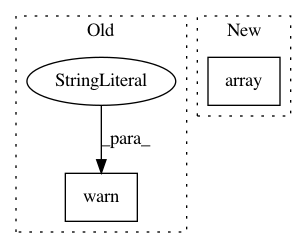

c8105b3974fba93097bd28e5ae14a27e5f56c857,ilastik/applets/objectExtraction/objectExtractionSerializer.py,SerialObjectFeaturesSlot,deserialize,#SerialObjectFeaturesSlot#Any#,79
Before Change
for key in gr[t][ch].keys():
feat[key] = gr[t][ch][key].value
cache[int(t)].append(feat)
warnings.warn("FIXME: Not deserializing object features")
//op._opRegFeats._cache = cache
self.dirty = False
After Change
region_features[key] = val[...]
slotRoi = SubRegion( opRegFeats.CacheInput, *roi )
opRegFeats.setInSlot( opRegFeats.CacheInput, (), slotRoi, numpy.array( [[region_features]] ) )
self.dirty = False
In pattern: SUPERPATTERN
Frequency: 3
Non-data size: 2
Instances
Project Name: ilastik/ilastik
Commit Name: c8105b3974fba93097bd28e5ae14a27e5f56c857
Time: 2013-03-14
Author: bergs@janelia.hhmi.org
File Name: ilastik/applets/objectExtraction/objectExtractionSerializer.py
Class Name: SerialObjectFeaturesSlot
Method Name: deserialize
Project Name: shakedzy/dython
Commit Name: c39850dcb5112d64ffd9d4d4bce178155ecc3b64
Time: 2018-04-09
Author: shaked.zychlinski@doubleverify.com
File Name: dython/utils.py
Class Name:
Method Name: roc_graph
Project Name: acoular/acoular
Commit Name: bc22d044fac59b29d4e5f83e00c4be8448a4bc43
Time: 2018-05-03
Author: gert.herold@tu-berlin.de
File Name: acoular/fbeamform.py
Class Name: PointSpreadFunction
Method Name: _get_psf